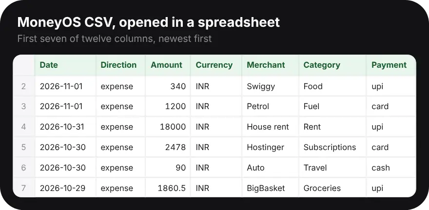

Why export your expenses to a spreadsheet?
Because a spreadsheet lets you slice your own numbers any way you like, and keep a copy outside the app.
The app shows the views most people need: the month, categories, limits and trends. A spreadsheet is for everything else. You might want a full year of fuel costs, a list of every card payment for a reimbursement claim, or your own chart for a family budget meeting. A CSV is also the most portable format there is, so your data is never locked into one app.
How do I export my expenses to Excel or Google Sheets?
In MoneyOS, go to Settings, tap CSV (spreadsheet) under Export and share, and save or send the file. Then open it in your spreadsheet app. Five steps:
- Pick the ledger. Exports cover the ledger you have open, so switch to Personal, Family or Business first if you use more than one.
- Open Export and share. Go to Settings and scroll to Export and share. Tap CSV (spreadsheet).
- Choose where it goes. The share sheet opens with a file named MoneyOS and the date. Save it to Files, AirDrop it to your Mac, or email it to yourself.
- Open it in a spreadsheet. Excel and Numbers open the file directly. In Google Sheets, use File, then Import, and upload the CSV.
- Total it your way. Filter Direction to expense, then sum Amount by Category or by month. Each row is one transaction, newest first.
If your transactions are spread across Personal, Family and Business, export each ledger on its own. Read more on separate ledgers.
What is in the MoneyOS CSV file?
One row per transaction, newest first, with twelve columns: Date, Direction, Amount, Currency, Merchant, Category, Payment, Card, Tags, Source, Confidence and ID.

Dates are written year first, such as 2026-11-01, so they sort correctly. Amount is a plain number with no currency symbol or commas, which makes it easy to add up, and Currency sits in its own column. Direction says whether a row is an expense, income or a transfer. Payment holds cash, upi or card, and Card holds the card's name when you picked one. Tags are separated by semicolons. Source shows how the entry was added, for example typed, by voice or from an import.
How do I total my spending by category in a spreadsheet?
Filter Direction to expense, then add up Amount for each Category, with a pivot table or a SUMIF formula.
In Excel or Google Sheets, select the data and insert a pivot table with Category as the rows
and the sum of Amount as the values, filtered to Direction equals expense. For a single number, a
formula such as =SUMIFS(C:C, B:B, "expense", F:F, "Food") adds up every Food expense.
To compare months, add a column that takes the first seven characters of the date, which gives
the year and month. For a quicker monthly picture inside the app, see the 10-minute monthly review.
What other export formats does MoneyOS have?
Besides CSV, you can export a Markdown report, a plain-text ledger and a PDF report, each grouped by month.
The reports show each month's money in, money out and the difference, then the transactions under it. They suit sharing or printing rather than calculations. All four are plain files, not encrypted, so keep them somewhere private. For a protected copy of everything, use Encrypted backup in the same Settings screen. Here is how to back up your expense data. MoneyOS has no account and no server of ours. See the privacy policy.
Frequently asked questions
Can I export my expenses from MoneyOS to Excel?
Yes. In Settings, under Export and share, tap CSV (spreadsheet). The file opens in Excel, Google Sheets and Numbers.
What columns does the MoneyOS CSV have?
Date, Direction, Amount, Currency, Merchant, Category, Payment, Card, Tags, Source, Confidence and ID. Dates are written as year, month and day, and amounts are plain numbers with no currency symbol.
Does the export include all my ledgers?
The CSV, Markdown, text and PDF exports cover the ledger you have open. The JSON export in the Backup section covers all your transactions.
How do I see spending by category in a spreadsheet?
Filter the Direction column to expense, then sum the Amount column for each Category, for example with a pivot table or a SUMIF formula.
Is the exported file encrypted?
No. CSV, Markdown, text and PDF exports are plain files, so keep them somewhere private. For a protected copy, use Encrypted backup instead.
Is MoneyOS free?
Yes. The whole app is free, with no subscription, no ads and no in-app purchases.